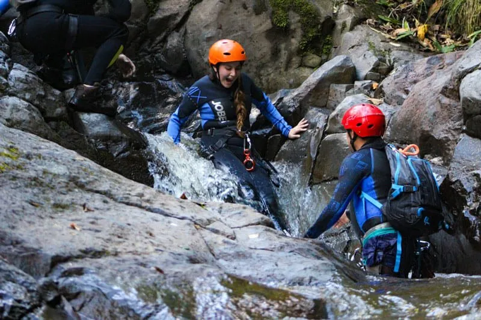
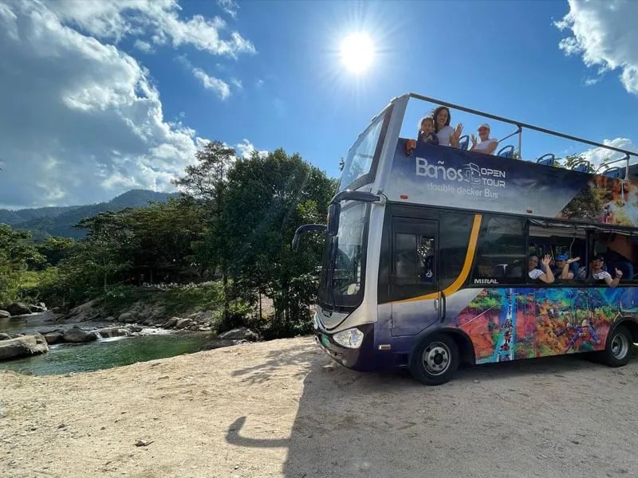
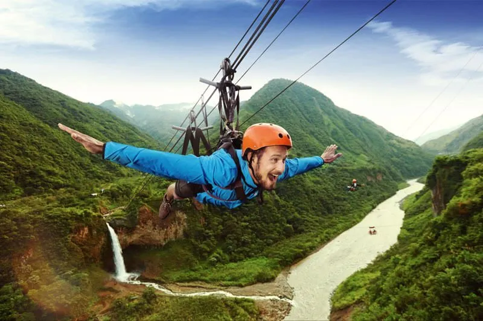

Welcome to Baños de
Agua Santa
NEWS
Puntzan Canopy!
Another ideal place to do extreme activities in the area is Puntzan Canopy. There you can do activities such as canopy, canyoning or canyoning, climb a Tibetan bridge next to the waterfall, take a hoverboard, do sport fishing, among others. This highly recommended place is located in San Antonio de Puntzan Km 5, via Runtún.
City tour on the Chebastour bus
Tour the city of Baños de Agua Santa on the Chebastour double-decker bus, through which you will enjoy the main charms of this town.
Visit Baños de Agua Santa
Baños is one of the most important and complete tourist destinations in Ecuador. It is considered the gateway to the Ecuadorian Amazon, as well as the adventure capital of Ecuador. In Baños you can do extreme activities, enjoy the abundant nature of the area, relax in the hot spring pools, enjoy the active nightlife and taste the wonderful local cuisine.
Because you are thinking about visiting this unmissable destination in Ecuador and to make your stay the best, in this article we want to tell you what to do in Baños.